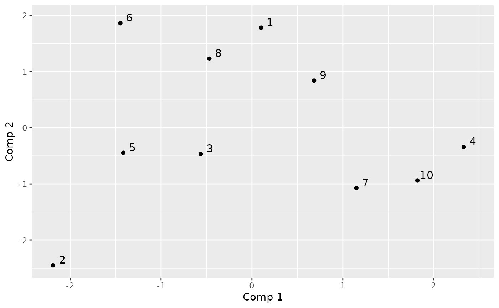

Compute the optimal encoding for categorical functional data using an extension of the multiple correspondence analysis to a stochastic process.
compute_optimal_encoding( data, basisobj, computeCI = TRUE, nBootstrap = 50, propBootstrap = 1, nCores = max(1, ceiling(detectCores()/2)), verbose = TRUE, ... )
Arguments
| data | data.frame containing |
|---|---|
| basisobj | basis created using the |
| computeCI | if TRUE, perform a bootstrap to estimate the variance of encoding's coefficients |
| nBootstrap | number of bootstrap samples |
| propBootstrap | size of bootstrap samples relative to the number of individuals: propBootstrap * number of individuals |
| nCores | number of cores used for parallelization. Default is the half of cores. |
| verbose | if TRUE print some information |
| ... | parameters for |
Value
A list containing:
eigenvalueseigenvaluesalphaoptimal encoding coefficients associated with each eigenvectorspcprincipal componentsFmatrix containing the \(F_{(x,i)(y,j)}\)Vmatrix containing the \(V_{(x,i)}\)Gcovariance matrix ofVbasisobjbasisobjinput parameterptoutput of estimate_pt functionbootstrapOnly ifcomputeCI = TRUE. Output of every bootstrap runvarAlphaOnly ifcomputeCI = TRUE. Variance of alpha parametersrunTimeTotal elapsed time
Details
See the vignette for the mathematical background: RShowDoc("cfda", package = "cfda")
Extra parameters (...) for the integrate function can be:
subdivisions the maximum number of subintervals.
rel.tol relative accuracy requested.
abs.tol absolute accuracy requested.
References
Deville J.C. (1982) Analyse de données chronologiques qualitatives : comment analyser des calendriers ?, Annales de l'INSEE, No 45, p. 45-104.
Deville J.C. et Saporta G. (1980) Analyse harmonique qualitative, DIDAY et al. (editors), Data Analysis and Informatics, North Holland, p. 375-389.
Saporta G. (1981) Méthodes exploratoires d'analyse de données temporelles, Cahiers du B.U.R.O, Université Pierre et Marie Curie, 37-38, Paris.
See also
Author
Cristian Preda, Quentin Grimonprez
Examples
# Simulate the Jukes-Cantor model of nucleotide replacement K <- 4 Tmax <- 6 PJK <- matrix(1/3, nrow = K, ncol = K) - diag(rep(1/3, K)) lambda_PJK <- c(1, 1, 1, 1) d_JK <- generate_Markov(n = 10, K = K, P = PJK, lambda = lambda_PJK, Tmax = Tmax, labels = c("A", "C", "G", "T")) d_JK2 <- cut_data(d_JK, Tmax) # create basis object m <- 6 b <- create.bspline.basis(c(0, Tmax), nbasis = m, norder = 4) # compute encoding encoding <- compute_optimal_encoding(d_JK2, b, computeCI = FALSE, nCores = 1)#> ######### Compute encoding ######### #> Number of individuals: 10 #> Number of states: 4 #> Basis type: bspline #> Number of basis functions: 6 #> Number of cores: 1 #> ---- Compute V matrix: #> #> DONE in 0.51s #> ---- Compute U matrix: #> #> DONE in 3.45s #> ---- Compute encoding: #> DONE in 0s #> Run Time: 3.97s#> #### FMCA #> #> ## Data #> Number of individuals: 10 #> Number of states: 4 #> Time Range: 0 to 6 #> States: A C G T #> #> ## Basis #> Type: bspline #> Number of basis functions: 6 #> #> ## Outputs #> Eigenvalues: #> 3.29741 2.67067 1.92089 1.471942 1.207885 0.8020884 #> #> Explained variance: #> 0.266 0.481 0.635 0.754 0.851 0.916 #> #> Optimal encoding: #> A C G T #> [1,] -0.10643563 -5.2401529 0.042809300 0.6182944 #> [2,] -0.16847451 -0.1286093 -1.160491283 0.4558346 #> [3,] 0.32767917 -0.4691299 -0.002875877 0.3339150 #> [4,] -0.98210239 0.2120442 -0.608926779 0.5233614 #> [5,] 0.54237695 0.4061259 -0.917184041 1.0693405 #> [6,] -0.06934882 0.5315809 -0.477442453 0.2076043 #> #> Principal components: #> [,1] [,2] [,3] [,4] [,5] [,6] #> 1 0.116368 -0.9397714 1.9560691 -0.7832471 -1.6224932 -0.1067405 #> 2 -2.007402 -0.8486983 -1.2146736 0.1208204 0.9417470 1.6510991 #> 3 2.162904 0.1881653 0.8170901 -0.3028896 0.5517637 1.3102070 #> 4 1.654312 1.5051248 0.8992677 0.3589479 2.0794096 -0.9011777 #> 5 -2.305955 1.9900401 -0.1216321 0.7875010 -0.3396240 -0.6185011 #> 6 1.443430 -1.0003753 0.6998813 2.2087769 -0.8732895 0.2427322 #> #> Total elapsed time: 3.973 s#> Warning: Removed 47 row(s) containing missing values (geom_path).#> $x #> [1] 0.00000000 0.04724409 0.09448819 0.14173228 0.18897638 0.23622047 #> [7] 0.28346457 0.33070866 0.37795276 0.42519685 0.47244094 0.51968504 #> [13] 0.56692913 0.61417323 0.66141732 0.70866142 0.75590551 0.80314961 #> [19] 0.85039370 0.89763780 0.94488189 0.99212598 1.03937008 1.08661417 #> [25] 1.13385827 1.18110236 1.22834646 1.27559055 1.32283465 1.37007874 #> [31] 1.41732283 1.46456693 1.51181102 1.55905512 1.60629921 1.65354331 #> [37] 1.70078740 1.74803150 1.79527559 1.84251969 1.88976378 1.93700787 #> [43] 1.98425197 2.03149606 2.07874016 2.12598425 2.17322835 2.22047244 #> [49] 2.26771654 2.31496063 2.36220472 2.40944882 2.45669291 2.50393701 #> [55] 2.55118110 2.59842520 2.64566929 2.69291339 2.74015748 2.78740157 #> [61] 2.83464567 2.88188976 2.92913386 2.97637795 3.02362205 3.07086614 #> [67] 3.11811024 3.16535433 3.21259843 3.25984252 3.30708661 3.35433071 #> [73] 3.40157480 3.44881890 3.49606299 3.54330709 3.59055118 3.63779528 #> [79] 3.68503937 3.73228346 3.77952756 3.82677165 3.87401575 3.92125984 #> [85] 3.96850394 4.01574803 4.06299213 4.11023622 4.15748031 4.20472441 #> [91] 4.25196850 4.29921260 4.34645669 4.39370079 4.44094488 4.48818898 #> [97] 4.53543307 4.58267717 4.62992126 4.67716535 4.72440945 4.77165354 #> [103] 4.81889764 4.86614173 4.91338583 4.96062992 5.00787402 5.05511811 #> [109] 5.10236220 5.14960630 5.19685039 5.24409449 5.29133858 5.33858268 #> [115] 5.38582677 5.43307087 5.48031496 5.52755906 5.57480315 5.62204724 #> [121] 5.66929134 5.71653543 5.76377953 5.81102362 5.85826772 5.90551181 #> [127] 5.95275591 6.00000000 #> #> $y #> A C G T #> [1,] -1.064356e-01 NA NA NA #> [2,] -1.103216e-01 NA NA NA #> [3,] -1.132208e-01 NA NA 0.5959441 #> [4,] -1.151850e-01 NA NA 0.5852709 #> [5,] -1.162657e-01 NA NA 0.5749281 #> [6,] -1.165145e-01 NA NA 0.5649127 #> [7,] -1.159831e-01 NA NA 0.5552215 #> [8,] -1.147230e-01 NA NA 0.5458514 #> [9,] -1.127859e-01 NA NA 0.5367993 #> [10,] -1.102233e-01 NA NA 0.5280621 #> [11,] -1.070868e-01 NA NA 0.5196366 #> [12,] -1.034280e-01 NA NA 0.5115197 #> [13,] -9.929857e-02 NA -0.6003647 0.5037084 #> [14,] -9.475008e-02 NA -0.6244870 0.4961994 #> [15,] -8.983412e-02 NA -0.6448764 0.4889897 #> [16,] -8.460229e-02 NA -0.6617047 0.4820762 #> [17,] -7.910620e-02 NA -0.6751439 0.4754557 #> [18,] -7.339745e-02 NA -0.6853655 0.4691250 #> [19,] -6.752762e-02 NA -0.6925416 0.4630812 #> [20,] -6.154834e-02 NA -0.6968439 0.4573211 #> [21,] -5.551118e-02 NA -0.6984442 0.4518414 #> [22,] -4.946777e-02 NA -0.6975143 0.4466393 #> [23,] -4.346969e-02 NA -0.6942261 0.4417114 #> [24,] -3.756854e-02 NA -0.6887514 0.4370547 #> [25,] -3.181593e-02 NA -0.6812620 0.4326661 #> [26,] -2.626346e-02 NA -0.6719297 0.4285425 #> [27,] -2.096273e-02 NA -0.6609263 0.4246806 #> [28,] -1.596533e-02 NA -0.6484237 0.4210775 #> [29,] -1.132287e-02 NA -0.6345936 0.4177300 #> [30,] -7.086942e-03 NA -0.6196080 0.4146350 #> [31,] -3.309156e-03 NA -0.6036385 0.4117893 #> [32,] -4.110761e-05 NA -0.5868570 0.4091898 #> [33,] 2.665602e-03 -0.335463199 -0.5694354 0.4068335 #> [34,] 4.759374e-03 -0.319017652 -0.5515454 0.4047171 #> [35,] 6.188607e-03 -0.305952359 -0.5333589 0.4028377 #> [36,] 6.901701e-03 -0.295833889 -0.5150477 0.4011919 #> [37,] 6.847055e-03 -0.288228808 -0.4967836 0.3997769 #> [38,] 5.973070e-03 -0.282703686 -0.4787384 0.3985893 #> [39,] 4.228146e-03 -0.278825089 -0.4610840 0.3976261 #> [40,] 1.560681e-03 -0.276159586 -0.4439921 0.3968842 #> [41,] -2.080923e-03 -0.274273744 -0.4276346 0.3963605 #> [42,] -6.748268e-03 -0.272734132 -0.4121833 0.3960518 #> [43,] -1.249295e-02 -0.271107317 -0.3978101 0.3959550 #> [44,] -1.936035e-02 NA -0.3846765 0.3960673 #> [45,] -2.732346e-02 NA -0.3728269 0.3963897 #> [46,] -3.630858e-02 NA -0.3622298 0.3969255 #> [47,] -4.624123e-02 NA -0.3528525 0.3976781 #> [48,] -5.704692e-02 NA -0.3446621 0.3986509 #> [49,] -6.865118e-02 NA -0.3376258 0.3998473 #> [50,] -8.097952e-02 NA -0.3317110 0.4012706 #> [51,] -9.395748e-02 NA -0.3268848 0.4029243 #> [52,] -1.075106e-01 -0.230312653 -0.3231144 0.4048118 #> [53,] -1.215643e-01 -0.223080242 -0.3203672 0.4069364 #> [54,] -1.360442e-01 -0.215384294 -0.3186103 0.4093015 #> [55,] -1.508758e-01 -0.207245662 -0.3178109 0.4119105 #> [56,] -1.659845e-01 -0.198685198 -0.3179364 0.4147669 #> [57,] -1.812960e-01 -0.189723756 -0.3189538 0.4178739 #> [58,] -1.967358e-01 -0.180382187 -0.3208305 0.4212351 #> [59,] -2.122293e-01 -0.170681345 -0.3235336 0.4248537 #> [60,] -2.277021e-01 -0.160642082 -0.3270305 0.4287332 #> [61,] -2.430797e-01 -0.150285250 -0.3312883 0.4328769 #> [62,] -2.582877e-01 -0.139631703 -0.3362743 0.4372883 #> [63,] -2.732515e-01 -0.128702293 -0.3419556 0.4419708 #> [64,] -2.878966e-01 -0.117517872 -0.3482996 0.4469276 #> [65,] -3.021487e-01 -0.106099293 -0.3552735 0.4521623 #> [66,] -3.159331e-01 -0.094467409 -0.3628444 0.4576782 #> [67,] -3.291755e-01 -0.082643073 -0.3709796 0.4634787 #> [68,] -3.418013e-01 -0.070647137 -0.3796464 0.4695672 #> [69,] -3.537360e-01 -0.058500453 -0.3888119 0.4759471 #> [70,] -3.649053e-01 -0.046223875 -0.3984435 0.4826217 #> [71,] -3.752346e-01 -0.033838255 NA 0.4895946 #> [72,] -3.846493e-01 -0.021364445 NA 0.4968689 #> [73,] -3.930752e-01 -0.008823299 NA 0.5044482 #> [74,] -4.004376e-01 0.003764332 NA 0.5123359 #> [75,] -4.066620e-01 0.016377594 NA 0.5205352 #> [76,] -4.116741e-01 0.028995635 NA 0.5290497 #> [77,] -4.153993e-01 0.041597602 NA 0.5378827 #> [78,] -4.177632e-01 0.054162642 NA 0.5470375 #> [79,] -4.186912e-01 0.066669904 NA 0.5565177 #> [80,] -4.181089e-01 0.079098534 -0.5131798 0.5663265 #> [81,] -4.159418e-01 0.091427680 -0.5257746 0.5764674 #> [82,] -4.121154e-01 0.103636488 -0.5384421 0.5869438 #> [83,] -4.065552e-01 0.115704107 -0.5511496 0.5977589 #> [84,] -3.991869e-01 0.127609684 -0.5638643 0.6089164 #> [85,] -3.899358e-01 0.139332366 -0.5765535 0.6204194 #> [86,] -3.787289e-01 0.150851475 -0.5891843 0.6322708 #> [87,] -3.655786e-01 0.162156792 -0.6017193 0.6444358 #> [88,] -3.506295e-01 0.173254312 -0.6141141 NA #> [89,] -3.340377e-01 0.184151422 -0.6263235 0.6693295 #> [90,] -3.159593e-01 0.194855511 -0.6383024 0.6818621 #> [91,] -2.965504e-01 0.205373967 -0.6500059 0.6943211 #> [92,] -2.759670e-01 0.215714180 -0.6613889 0.7066085 #> [93,] -2.543651e-01 0.225883537 -0.6724062 0.7186262 #> [94,] -2.319009e-01 0.235889428 -0.6830128 0.7302763 #> [95,] -2.087304e-01 0.245739240 -0.6931637 0.7414606 #> [96,] -1.850098e-01 0.255440363 -0.7028136 0.7520812 #> [97,] -1.608949e-01 0.265000184 -0.7119177 0.7620400 #> [98,] -1.365420e-01 0.274426092 -0.7204307 0.7712389 #> [99,] -1.121071e-01 0.283725476 -0.7283077 0.7795800 #> [100,] -8.774623e-02 0.292905724 -0.7355035 0.7869651 #> [101,] -6.361550e-02 0.301974225 -0.7419732 0.7932963 #> [102,] -3.987097e-02 0.310938367 -0.7476715 0.7984755 #> [103,] -1.666871e-02 0.319805539 -0.7525534 0.8024046 #> [104,] 5.835221e-03 0.328583129 -0.7565739 0.8049857 #> [105,] 2.748475e-02 0.337278525 -0.7596879 0.8061206 #> [106,] 4.812380e-02 0.345899117 -0.7618503 0.8057114 #> [107,] 6.759632e-02 0.354452293 -0.7630161 0.8036600 #> [108,] 8.574622e-02 0.362945441 -0.7631401 0.7998683 #> [109,] 1.024175e-01 0.371385950 -0.7621773 0.7942384 #> [110,] 1.174539e-01 0.379781208 -0.7600826 0.7866721 #> [111,] 1.306996e-01 0.388138603 -0.7568110 0.7770715 #> [112,] 1.419984e-01 0.396465525 -0.7523173 0.7653385 #> [113,] 1.511942e-01 0.404769362 -0.7465565 0.7513751 #> [114,] 1.581310e-01 0.413057502 -0.7394836 0.7350832 #> [115,] 1.626528e-01 0.421337334 -0.7310534 0.7163647 #> [116,] 1.646034e-01 0.429616246 -0.7212209 0.6951217 #> [117,] 1.638267e-01 0.437901627 -0.7099409 0.6712562 #> [118,] 1.601668e-01 0.446200866 -0.6971685 0.6446700 #> [119,] 1.534675e-01 0.454521350 -0.6828586 0.6152651 #> [120,] 1.435727e-01 0.462870469 -0.6669660 0.5829435 #> [121,] 1.303265e-01 0.471255610 -0.6494458 0.5476071 #> [122,] 1.135727e-01 0.479684163 -0.6302528 0.5091580 #> [123,] 9.315526e-02 0.488163515 -0.6093419 0.4674980 #> [124,] 6.891812e-02 0.496701056 -0.5866681 0.4225292 #> [125,] 4.070521e-02 0.505304174 -0.5621864 0.3741534 #> [126,] 8.360466e-03 0.513980257 -0.5358516 0.3222727 #> [127,] -2.827219e-02 0.522736694 -0.5076186 0.2667890 #> [128,] NA 0.531580873 -0.4774425 0.2076043 #>